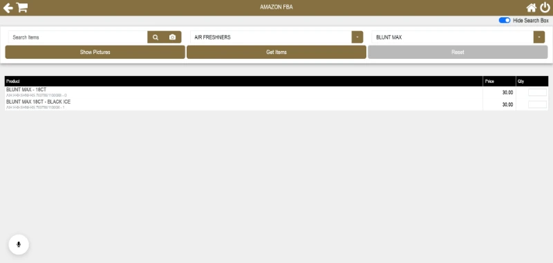

My role & result
I built the desktop and integration workflows for a wholesale distribution business: WinForms screens, QuickBooks SDK integration, local data access, web synchronization, background services, and workstation deployment.
Reduced desktop startup from 2–3 minutes to about 10 seconds by optimizing data loading and caching. QuickBooks remained the accounting source of truth while staff gained a focused workspace for daily operations.
The problem
Sales and warehouse staff needed a simpler way to create orders, invoice customers, find stock, and prepare fulfillment. Working directly in QuickBooks exposed accounting screens they did not need. Category-level invoice quantities also required manual calculation, and data had to reach a separate web system without repeated entry.
Three engineering decisions
1. Separate fast lookups from accounting writes
I used local SQLite storage and in-memory caches for frequently accessed data, with MySQL supporting shared business data. This reduced repeated QuickBooks queries during startup and lookup workflows. QuickBooks SDK sessions still handled accounting queries and modifications, keeping the operational interface connected to the existing accounting system.
2. Make synchronization recoverable
A COM event listener receives QuickBooks changes, re-queries the updated record, and synchronizes supported entities with MySQL and the web API. Failed invoice and credit-memo publishes are kept for retry. Outbox records, error logs, and dead-letter payloads make unsuccessful delivery visible and recoverable when a connection or API is unavailable.
3. Include deployment in the delivery
I built a Windows Service that watches invoice and product folders, waits for files to finish copying, validates filenames, and retries failed uploads. A workstation setup wizard configures the company file, database connection, API, and watched folders. The installer packages the app and helper services with configuration and registration steps.
A daily workflow
Staff select a customer, find items, enter quantities, and create an invoice. The application calculates category totals, sends the accounting transaction to QuickBooks, and publishes the corresponding operational data to the web system. Publishing failures can be retried without asking staff to recreate the invoice.
Synthetic example · illustrative workflow
Invoice DEMO-001 · Example Wholesale
Sample records created for this portfolio; this is a workflow illustration, not a production screenshot.
- Sample item A
- 2 units × $15.00 = $30.00
- Sample item B
- 3 units × $10.00 = $30.00
- Invoice total
- $60.00
- Create the invoice in QuickBooks.
- Publish its operational data to the web API.
- Retain a failed publish for retry and record the delivery outcome.
Product interface

Delivery scope
The delivered workflows cover sales orders, invoices, returns, pricing, inventory, purchase receiving, pick lists, and operational reports. The implementation combines C#/.NET, WinForms, QuickBooks Desktop SDK/QBXML, SQLite, MySQL, Windows Services, and a connected web API.
The startup improvement is the measured outcome presented here. The remaining benefits are workflow changes: fewer manual calculations, repeatable deployment, and recoverable synchronization.
Client feedback
“Ibrahim translated a complex QuickBooks workflow into a practical product layer for our team. He handled backend logic, reporting, and automation with strong ownership and consistent delivery.”